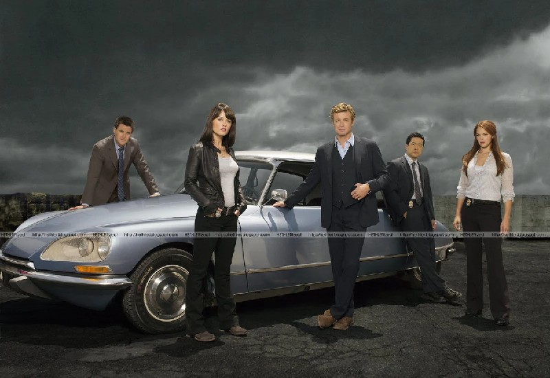

El Citroën DS 21 Pallas (1971)
El coche de Patrick Jane es un automóvil francés de culto con suspensión hidroneumática. Fue una elección personal del actor Simon Baker.
Baker quiso rendir homenaje al detective televisivo Columbo (quien conducía un Peugeot 403) y dotar a Jane de un vehículo con personalidad europea, refinada y deliberadamente atípica en las carreteras de California.